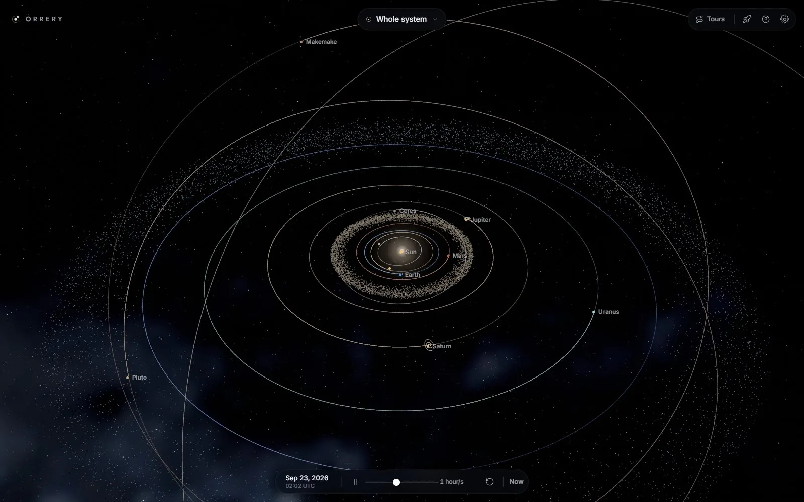
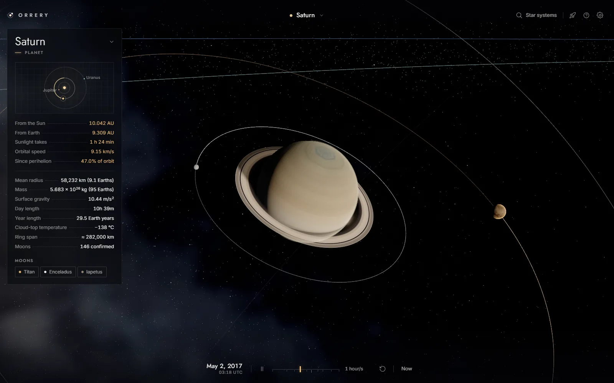
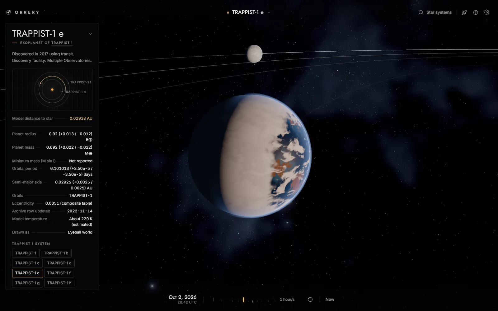

Orrery
An interactive 3D model of the solar system that runs in the browser, built with three.js. It also has thousands of planetary systems around other stars, built from the NASA Exoplanet Archive.
Open Orrery
Features
- The Sun, planets, dwarf planets and their major moons, where they really are on any date. Positions are most accurate between 1800 and 2050.
- Jump to any date, or to moments like the 2020 great conjunction. Time can be sped up, slowed down or run backwards.
- A flight mode for flying around the solar system yourself.
- About 4,800 exoplanet systems, updated every week. Search them under
Star systems, or click a ringed star in the sky to go there. - The night sky from the Yale Bright Star Catalogue.
- Game controllers and VR headsets, including hand tracking.
- Installs from the browser and works offline. There is also a desktop app for Windows, macOS and Linux.
Controls
Drag to rotate and scroll to zoom. Click on a planet or moon to focus on it. Click on the date to change it.
- Press H to see the whole system.
- Press Space to pause. Use , and . to slow down or speed up time.
- Press G for flight mode, then click to capture the mouse. Use W/S for the throttle, A/D to roll and Shift to boost. Press Esc to exit.
- Press ? to see every control, including the ones for controllers and VR.
How It Works
Planet positions come from JPL's approximate orbital elements, and each planet's tilt and spin from the IAU, so the seasons and the day side are right. Sizes and distances are compressed so everything is big enough to see. The Scale setting changes how much.
Exoplanet systems are built from whatever has been measured: orbital periods, orbit sizes, planet radii and masses, and the star's temperature. Missing values are estimated, and the info panel says which ones. Where each planet sits along its orbit is made up, and most surfaces are generated from the planet's size and temperature.
It's plain JavaScript with no build step. The source is on GitHub.
Screenshots


Made by Adam Jarvis.